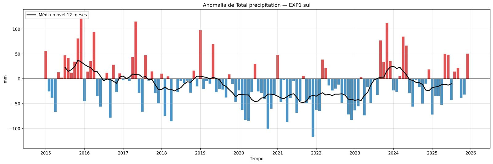
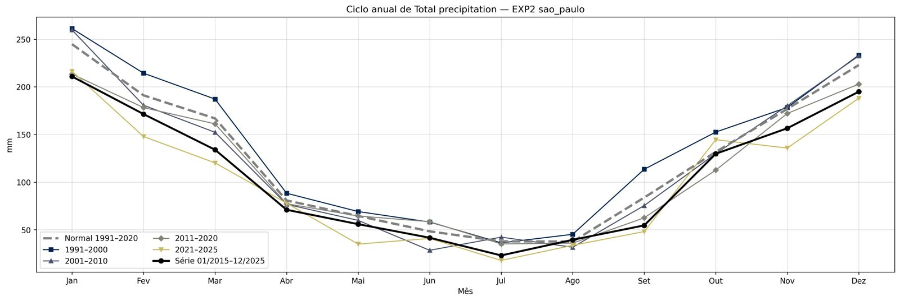
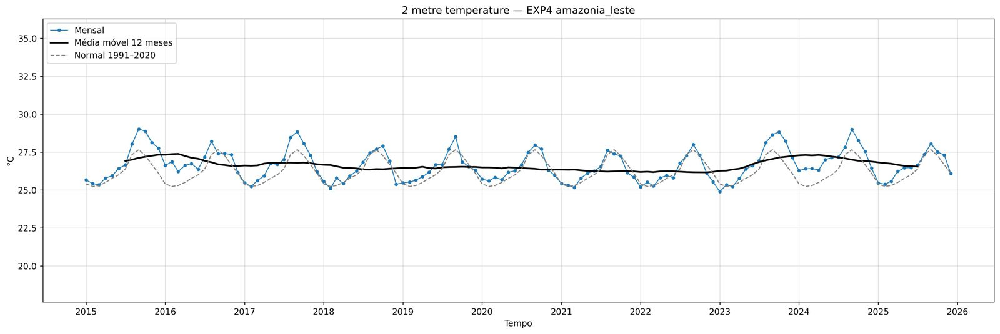

Tropical
Balanços de energia no topo da atmosfera, na atmosfera e na superfície, além de chuva, nuvens e fluxos de calor, em regiões que você escolhe. Usa médias mensais do ERA5 e anomalias em relação à normal 1991–2020.

O que faz
Do download às figuras, com os seus domínios definidos em um único namelist.
Boxes definidos por você
Uma linha por região no namelist. Escolha se a média usa todos os pontos, só o continente ou só o oceano.
Download do ERA5
Baixa via API do Copernicus (CDS), divide pedidos grandes e retoma de onde parou se o servidor falhar.
Normal 1991–2020
Calcula a normal climatológica de cada box e as anomalias do período de análise em relação a ela.
Figuras prontas
Séries temporais, anomalias, ciclo anual por década e mapas mensais dos balanços e de cada variável.
Exemplo: quatro regiões do Brasil
Teste com o período 2015–2025. Boxes de 10° × 10°; em sul e sao_paulo a média usa só o continente.

| Box | Região | lat | lon |
|---|---|---|---|
| EXP1 sul | RS, Uruguai e NE da Argentina | −35 a −25 | −60 a −50 |
| EXP2 sao_paulo | Estado de São Paulo | −27 a −17 | −54 a −44 |
| EXP3 amazonia_oeste | Oeste da Amazônia | −10 a 0 | −73 a −63 |
| EXP4 amazonia_leste | Leste da Amazônia | −10 a 0 | −58 a −48 |
A seca de 2023 no oeste da Amazônia
Outubro de 2021 (La Niña, em cima) comparado ao auge da seca em outubro de 2023 (embaixo).

| Média no box (outubro) | 2021 | 2023 | Normal 1991–2020 |
|---|---|---|---|
| Chuva (mm) | 189 | 68 | 192 |
| Balanço atmosférico (W m⁻²) | 131 | 30 | 131 |
| Calor sensível (W m⁻², para cima) | 34 | 57 | 31 |
| Calor latente (W m⁻², para cima) | 122 | 109 | 121 |
| Temperatura a 2 m (°C) | 26,6 | 28,2 | 26,3 |
Séries e anomalias
Clique para ampliar.




Como usar
Requer uma conta no Copernicus CDS com a chave em ~/.cdsapirc.
O passo a passo completo está no README do repositório.
Clone e crie o ambiente
git clone https://github.com/Victorrani/tropical.git
cd tropical
conda env create -f env/environment.yml
conda activate tropical-envDefina os boxes
Em scripts/analysis/namelist.txt, uma linha por região.
exp_name=EXP1;name=sul;lat_max=-25;lat_min=-35;lon_max=-50;lon_min=-60;superficie=terraBaixe os dados e gere a normal
python scripts/download/get_data.py mascara
python scripts/analysis/normal.py
python scripts/download/get_data.py analise 2015 2025Processe e plote
python scripts/analysis/slice.py
python scripts/analysis/time_serie_vars.py
python scripts/analysis/climatologia.py
python scripts/analysis/desv.py
python scripts/plots/plot_desv.py